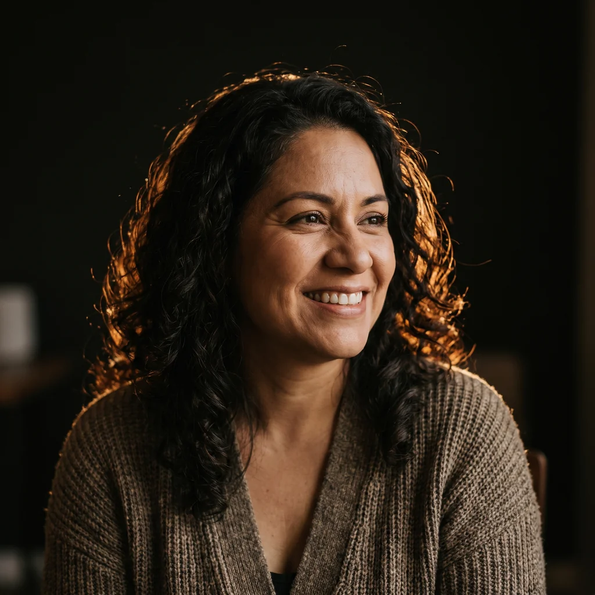
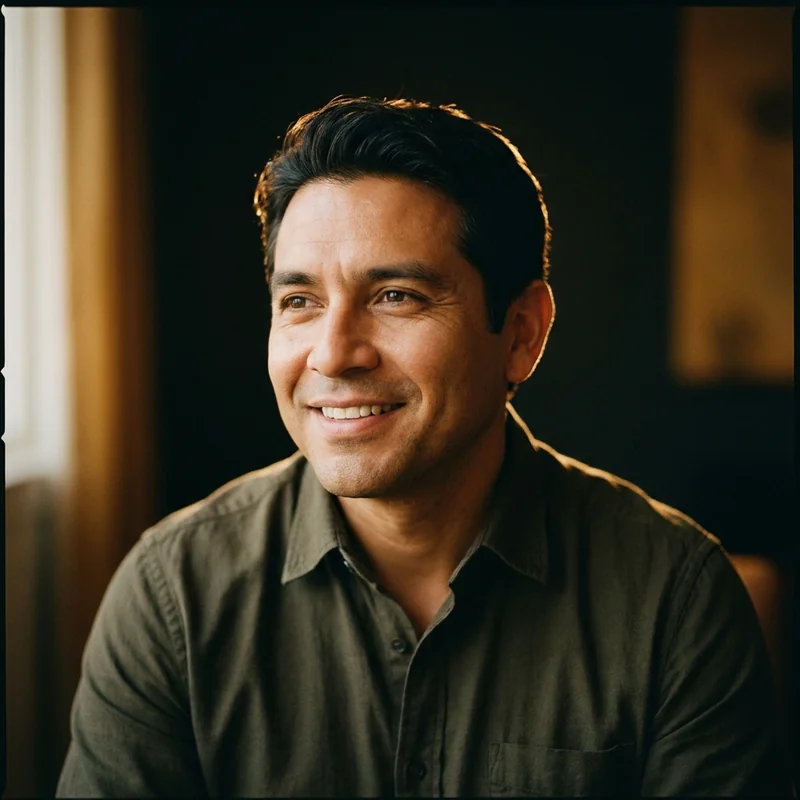
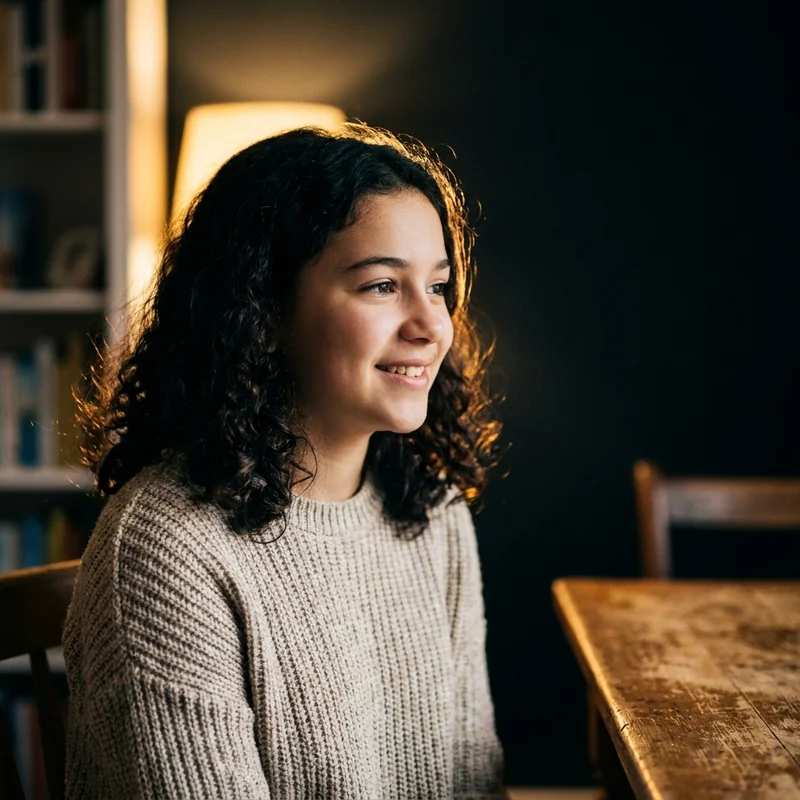

Se apaga cuando hay público
En casa no para de hablar. Frente al grupo baja la voz, mira al piso y termina la frase a medias. La idea estaba; el canal para sacarla, no.
Síntoma 01Liderazgo · Oratoria · 8 a 16 años
Grandes Líderes es el programa de oratoria, liderazgo e inteligencia social de WorldBrain México. Doce sesiones para que deje de pedir permiso para hablar y empiece a dirigir la conversación.
El diagnóstico
En la escuela se califica lo que sabe, casi nunca cómo lo dice. Así crecen niños brillantes que se vuelven invisibles en cuanto hay que levantar la mano. No es timidez: es una habilidad que nunca se entrenó.
En casa no para de hablar. Frente al grupo baja la voz, mira al piso y termina la frase a medias. La idea estaba; el canal para sacarla, no.
Síntoma 01La escribe bien en el examen, la comenta contigo saliendo de clase, pero no la dijo cuando contaba. Se acostumbra a que su opinión llegue tarde.
Síntoma 02Cede el trabajo en equipo, no se ofrece de representante, prefiere el papel pequeño. No le falta capacidad: le falta haber pasado por el susto y sobrevivirlo.
Síntoma 03La confianza no se hereda. Se ensaya.
El programa
Cada módulo agrega una capa sobre la anterior. No hay teoría suelta: todo se practica frente al grupo el mismo día que se explica.
Módulo troncal · 4 sesiones
Todo lo demás cuelga de aquí: postura, voz, escucha y criterio. Se diagnostica en la sesión uno y se vuelve a medir en la doce, con el mismo ejercicio grabado.
2 sesiones
Improvisación con reglas: un tema al azar, sesenta segundos, tres puntos.
2 sesiones
Defender una postura que no eligió. Es donde aparece el criterio propio.
1 sesión
1 sesión
1 sesión
1 sesión
Resultados
WorldBrain México lleva tres décadas en neuroaprendizaje. Grandes Líderes es el programa donde esa experiencia se vuelve carácter.
Desde el año 2000
Familias que recomiendan
Neuroaprendizaje aplicado
Grupos de 8 alumnos

«Llegó a casa y nos pidió la mesa para exponernos por qué merecía más tiempo de consola. Con datos. Perdimos la discusión.»

«La maestra nos habló para preguntar qué habíamos hecho. En dos meses pasó de no participar a coordinar su equipo.»

«Antes me temblaba la voz nomás de pensar en pasar al frente. Ahora es mi parte favorita de la clase.»
Testimonios de familias del programa. Nombres abreviados y apellido inicial por privacidad de menores, conforme a nuestro Aviso de Privacidad.
Hall of Fame
No son casos de folleto. Son cosas concretas que sucedieron después del programa, en la escuela y fuera de ella.
Se ofreció sin que nadie se lo pidiera y sostuvo el micrófono hora y media frente a 400 personas.
Oratoria en vivo
Ganó con una campaña de tres propuestas y un discurso de dos minutos que escribió y ensayó ella sola.
Liderazgo electo
Le tocó defender la postura contraria a la suya. Preparó el caso en dos días y llevó a su equipo a la final.
Debate competitivo
Convenció a la dirección con una propuesta escrita. Van 22 alumnos inscritos y una sesión cada viernes.
Iniciativa propia
Pidió el turno para explicar por qué el recreo debería tener reglas nuevas. Lo escucharon y las cambiaron.
Primer turno de palabra
Entró a la preparatoria que quería. Nos escribió que la entrevista se le hizo «más fácil que una clase».
Entrevista personal
Logros compartidos por las familias con su consentimiento. Nombres abreviados por tratarse de menores de edad.
Plan de estudios
Una etapa cada dos sesiones. La línea se traza a tu ritmo de lectura: cada nodo se enciende cuando llegas.
Sesiones 1–2
Se graba una presentación de un minuto sin preparación. Es el punto de partida contra el que se mide todo lo demás.
Sesiones 3–4
Respiración diafragmática, proyección, pausa y contacto visual. Ejercicios cortos, repetidos, con corrección inmediata.
Sesiones 5–6
Apertura, cuerpo y cierre. Aprende a decir lo mismo en treinta segundos y en tres minutos sin perder el punto.
Sesiones 7–8
Tema al azar, sesenta segundos. Aquí se rompe el miedo al hueco: descubre que puede pensar de pie.
Sesiones 9–10
Equipos, roles rotativos y una postura asignada. Se practica escuchar para responder, no para ganar.
Sesiones 11–12
Tema propio, ante familias invitadas. Se graba de nuevo y se entrega el antes y el después en el mismo video.
Preguntas frecuentes
Los grupos son de ocho alumnos máximo y las primeras sesiones no se habla frente a nadie: se trabaja en parejas. Nadie pasa al frente antes de estar listo, y nunca se obliga. La exposición es gradual y es justamente el punto: el miedo baja por costumbre, no por discurso.
De 8 a 16 años, en tres niveles: 8 a 10, 11 a 13 y 14 a 16. Se agrupa por edad y por resultado del diagnóstico, no solo por año de nacimiento: un niño de 10 con mucha soltura puede quedar mejor en el nivel intermedio.
Hay grupos presenciales en Cuautitlán Izcalli y grupos en vivo por videollamada. La oratoria funciona en los dos formatos porque lo que se entrena es hablarle a cámaras y a personas; en línea incluso se pierde el miedo al micrófono más rápido.
El costo depende del nivel, del formato y del grupo disponible, así que lo entregamos por escrito después de la sesión diagnóstica, junto con el reporte. Sin promociones que caducan en 24 horas y sin cargos sorpresa: decides con el número completo enfrente.
Dura 60 minutos y es sin costo. Tu hijo hace tres ejercicios cortos de presentación, escucha y trabajo en equipo; tú observas la segunda mitad. Al final te entregamos por escrito qué vimos, qué trabajaríamos primero, el grupo sugerido y el costo. Si el programa no es para él, te lo decimos ahí mismo.
Lo que casi siempre se nota primero, entre la tercera y la quinta sesión, es el volumen de voz y el contacto visual. El cambio de fondo —levantar la mano sin que se lo pidan— suele aparecer en la segunda mitad del programa. No es magia: son doce sesiones de ensayo con corrección.
Reserva tu lugar
La sesión diagnóstica es sin costo y sin compromiso. Sales con un reporte por escrito, aunque decidas no inscribirlo.
L–J 9:00–18:00 · V 9:00–17:00 · S 8:00–15:00
Próximo inicio de grupo
Los grupos son de ocho alumnos y se cierran por edad. Cuando un nivel se llena, el siguiente arranque es hasta el mes que entra.
Dentro de diez años no va a recordar la calificación. Va a recordar el día que se atrevió a hablar.
WorldBrain México · Grandes Líderes